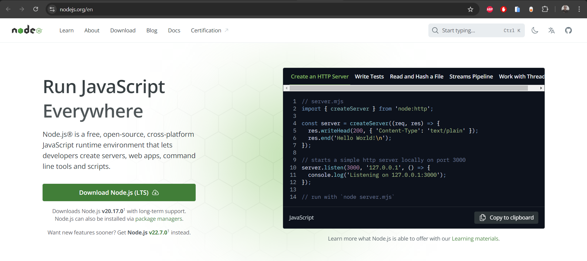

Getting Started
To get started with Javascript, you need to install node.
Installing Node.js
Node.js allows you to run JavaScript outside of the browser. Follow these steps to install Node.js:
Visit the Official Node.js Website:
Go to nodejs.org.

Download the Installer:
Choose the installer that matches your operating system (Windows, macOS, or Linux).
Run the Installer:
Execute the downloaded file and follow the installation prompts.
Verify Installation:
Open a terminal and type:
node -vThis command should display the installed version of Node.js, confirming that the installation was successful.
Last modified: 27 August 2024